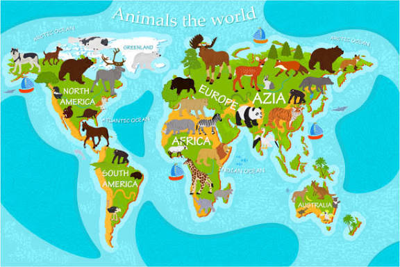

Mengenal Dunia Hewan Lebih Dekat
Zoo-F2NS merupakan website edukasi yang dibuat untuk memberikan informasi dan pengetahuan mengenai berbagai jenis hewan yang ada di dunia.
Melalui website ini, pengunjung dapat mengenal berbagai jenis satwa, mulai dari mamalia, burung, serangga, reptil, hingga hewan berdasarkan jenis makanannya.
Tujuan Website
Zoo-F2NS hadir dengan beberapa tujuan utama.
Media Edukasi
Memberikan informasi dan wawasan mengenai berbagai jenis hewan.
Menambah Pengetahuan
Membantu pengunjung mengenal habitat, makanan, dan karakteristik hewan.
Peduli Satwa
Menumbuhkan kesadaran untuk menjaga dan melestarikan kehidupan satwa.
Visi dan Misi Kami
Visi
Menjadi media informasi dan edukasi tentang dunia hewan yang menarik, informatif, dan mudah dipahami.
Misi
- Menyediakan informasi tentang berbagai jenis hewan.
- Memperkenalkan habitat dan makanan satwa.
- Meningkatkan kepedulian terhadap kelestarian hewan.
- Menghadirkan media pembelajaran yang menarik.
Explore • Learn • Protect
Setiap hewan memiliki peran penting dalam menjaga keseimbangan alam. Mari mengenal, mempelajari, dan menjaga keanekaragaman satwa demi masa depan lingkungan yang lebih baik.
Jelajahi Dunia Satwa →